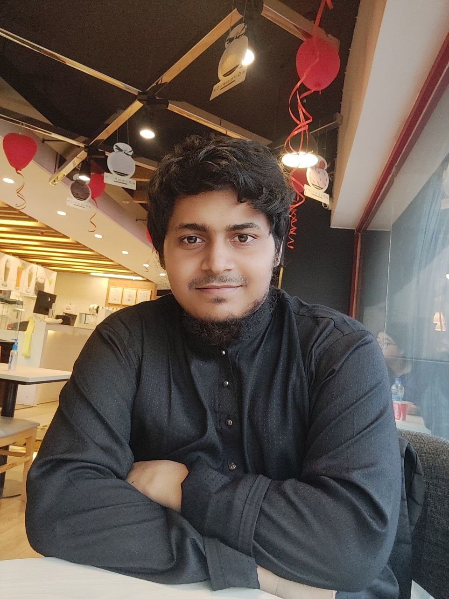

Welcome to My Academic Portfolio
Download CV“Dedicated to advancing sustainable chemical engineering through innovative research, bioprocess development, and environmental technologies.”
Academic Profile Highlights
Education
B.Sc. in Chemical Engineering
Bangladesh University of Engineering & Technology (BUET)
Primary Research Focus
Nanosorbents, Adsorbent-modified membranes, Bioprocess Engineering, and Environmental Water Treatment.